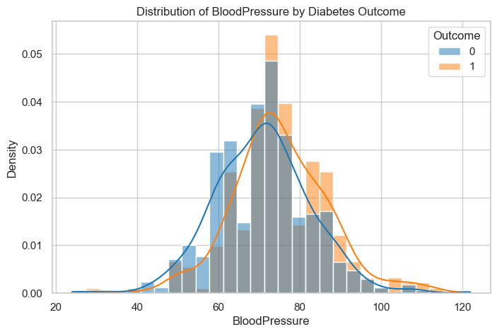
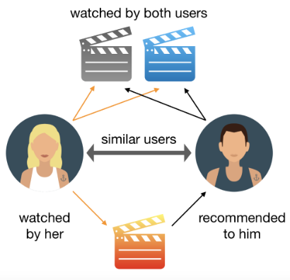

- Developed a complete modular machine learning pipeline to predict stroke risk from patient health data, achieving 93% accuracy.
- Modular coding: All data ingestion, preprocessing, SMOTE oversampling, feature engineering, modeling, and prediction steps are organized into reusable modules for clarity and scalability.
- Model experimentation: Tested multiple classifiers including Random Forest, Logistic Regression, SVM, Decision Tree, and KNN, with hyperparameter tuning for optimal performance.
- Pipeline integration: Built end-to-end ML pipelines for seamless preprocessing, model training, and inference.
- Deployment: Created a Flask web application for real-time stroke risk prediction using user input data.

- Performed a complete statistical investigation to identify key medical risk factors related to Type 2 Diabetes.
- Applied hypothesis testing including independent t-tests, chi-square tests, and normality checks.
- Built an interpretable logistic regression model using Statsmodels and analyzed odds ratios.
- Designed and evaluated a simulated A/B test to assess potential intervention effects.
- Focused on statistical significance, interpretability, and medically meaningful insights.

- Performed customer segmentation using K-Means to identify behavioral patterns among shoppers.
- Used Annual Income & Spending Score to classify customers into 5 strategic segments.
- Applied Elbow Method to determine the optimal number of clusters.
- Generated visual insights to support targeted marketing and customer-value strategies.
- Implements EDA → Modeling → Interpretation in a clean ML workflow.

- Collected a movie dataset with titles and descriptions
- Cleaned and preprocessed the text data using NLP techniques
- Converted text into numerical vectors using TF-IDF
- Calculated similarity scores with cosine similarity
- Built a content-based recommendation engine
- Developed an interactive web app interface using Streamlit
- Deployed as a user-friendly movie recommender web app
Enhancing Insights with Power BI: Mastering DAX Calculations and Dynamic Visualisations.

Using SQL to analyze customer behavior and sales trends from a movie rental database, supporting data-driven decisions.